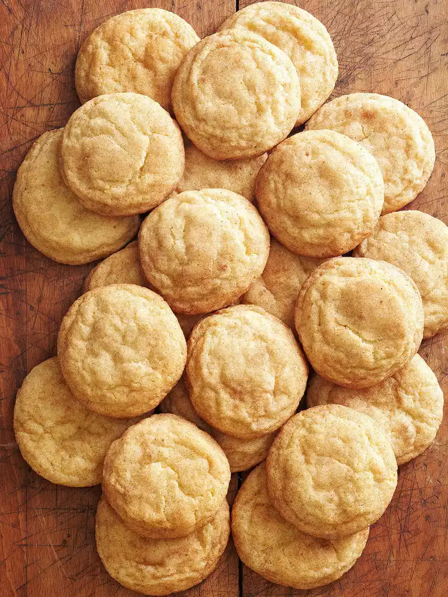

Snickerdoodles

Description
Delicious, puffy cookies, a great snack!
Ingredients
You will need:
- 1 cup butter, softened
- 1 1/2 cup sugar
- 1 teaspoon baking soda
- 1 teaspoon cream of tartar
- 1/4 teaspoon of salt
- 2 eggs
- 1 teaspoon vanilla
- 3 cups all-purpose flour
- 1/4 cup sugar
- 2 teaspoons ground cinnamon
Steps
- In a large mixing bowl beat butter with an electric mixer on medium to high speed for 30 seconds. Add 1-1/2 cups sugar, baking soda, cream of tartar, and salt. Beat until combined, scraping sides of bowl occasionally. Beat in eggs and vanilla until combined. Beat in as much of the flour as you can with the mixer. Using a wooden spoon, stir in any remaining flour. Cover and chill dough about 1 hour or until easy to handle.
- Preheat oven to 375°F. In a small bowl combine 1/4 cup sugar and cinnamon. Shape dough into 1-1/4-inch balls. Roll balls in cinnamon-sugar mixture to coat. Place 2 inches apart on an ungreased cookie sheet.
- Bake for 10 to 12 minutes or until bottoms are light brown. Transfer cookies to a wire rack; cool.
- Enjoy!